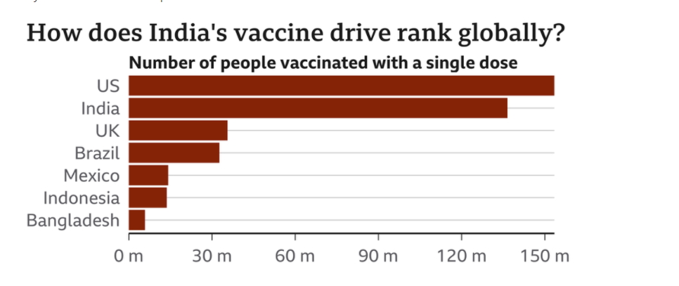
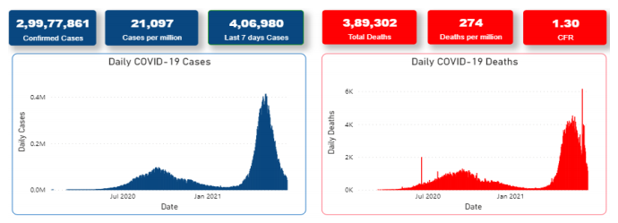
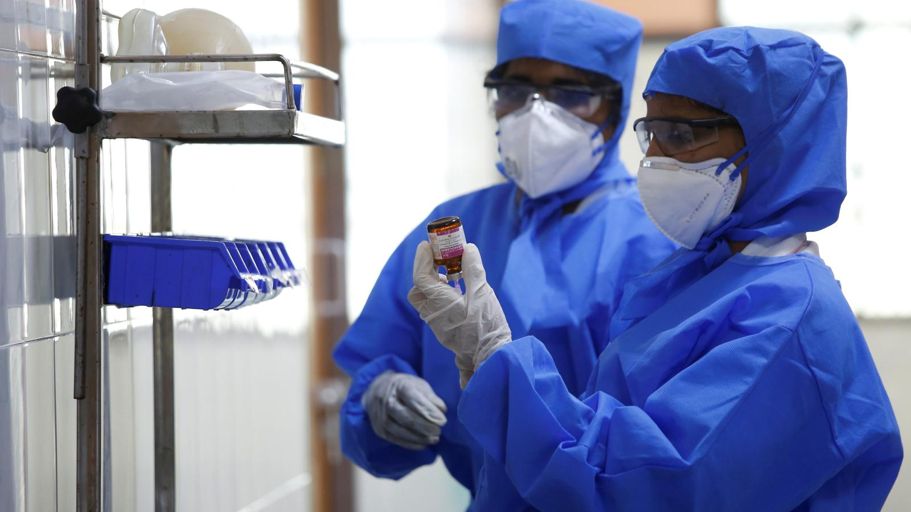
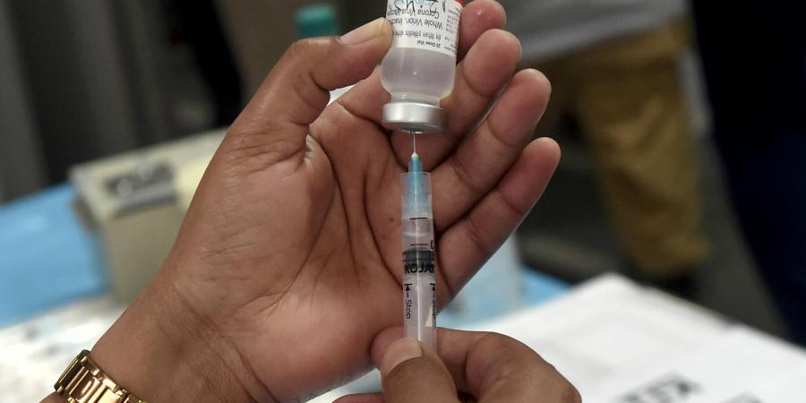

In India, highest number of cases in a day were 4,14,188; reported on 7th May 2021. Since then there is continuous decline in daily cases. India accounts for 16% of daily cases reported globally with 21,097 cases per million

Daily case and death ratio in india overtime



How Can we flaten the curve ?
Change the social distancing paradigm With careful epidemiological analysis and modern analytical techniques, we should be able to create risk stratification methodologies to allow lower risk individuals to get back to work while responsibly decreasing the risk to themselves and society. A flatter curve assumes the same number of people ultimately get infected, but over a longer period of time on a curve graph. A slower infection rate means a less stressed health care system, fewer hospital visits on any given day and fewer sick people being turned away.